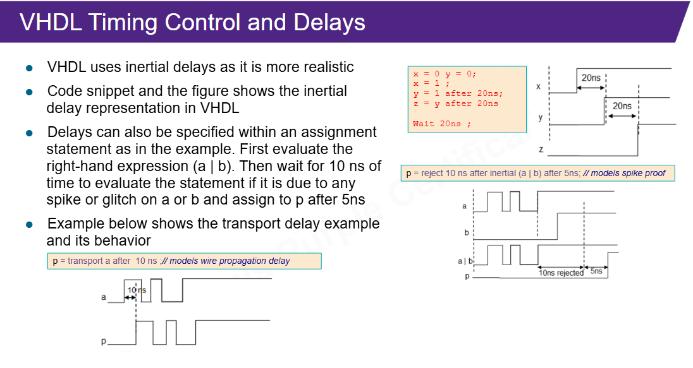
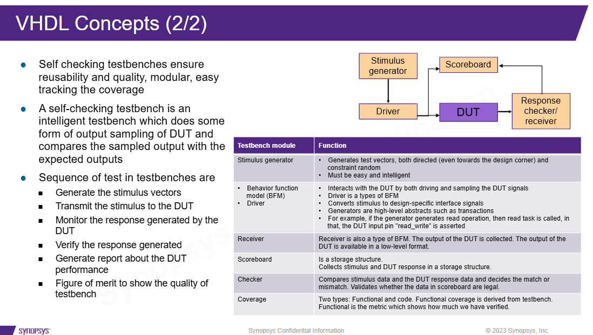

Ideia central
Esta aula usa VHDL fora do mundo da síntese. O objetivo não é criar hardware, mas criar um ambiente que testa hardware.
RTL VHDL -> design que pode ser sintetizado
Testbench VHDL -> ambiente que só existe na simulaçãoUm testbench fraco apenas aplica sinais. Um testbench melhor aplica sinais, calcula o esperado, compara a resposta e gera um relatório claro.
DUT e testbench
DUT significa Design Under Test. É o bloco que queremos verificar. O testbench fica ao redor dele, criando sinais, clock, reset, estímulos e checks.
Um testbench VHDL normalmente tem entidade sem portas:
entity twoBitAdder_tb is
end twoBitAdder_tb;Ele não precisa de portas porque é o topo da simulação. Ele cria internamente os sinais que ligam no DUT.
dut: entity work.twoBitAdder
port map (
x => x,
y => y,
z => z
);Exemplo didático do somador de 2 bits
O DUT dos slides soma dois operandos de 2 bits e gera uma saída de 3 bits. O terceiro bit é necessário para o carry.
z <= ('0' & x) + ('0' & y);
A concatenação com '0' amplia os operandos antes da soma.
Isso evita perder o carry em casos como 3 + 3 = 6.
Assert e report
Em Verilog você viu chamadas com $, como $display.
VHDL usa outro estilo. Para checar comportamento, uma construção central é
assert.
assert z = expected
report "Adder mismatch"
severity error;Isso transforma uma expectativa em regra executável. Se a saída não bate com o esperado, o testbench acusa. É o primeiro passo para sair da dependência de olhar waveform manualmente.
Por que isso é melhor que só imprimir?
Uma mensagem comum informa algo. Um assert define uma condição de sucesso. Em uma regressão, o assert permite que o teste falhe automaticamente sem depender de você abrir o Verdi e inspecionar cada sinal.
Clock generator
Clock em testbench é modelo de tempo. Ele é necessário para estimular DUTs sequenciais, mas não é RTL sintetizável.
clk_process : process
begin
clk <= '0';
wait for clk_period / 2;
clk <= '1';
wait for clk_period / 2;
end process;Esse padrão gera um clock de 50% duty cycle. Em projetos maiores, o testbench pode ter múltiplos clocks, fases diferentes ou jitter, mas o primeiro passo é manter clock e reset simples e confiáveis.
Inertial e transport delay
O slide de delays tem valor visual real porque mostra forma de onda. VHDL permite modelar atrasos de duas formas importantes.

| Delay | Como pensar | Uso didático |
|---|---|---|
| Inertial | porta real que pode ignorar pulso curto | modela rejeição de glitch |
| Transport | fio/canal que transporta mudanças | modela atraso de propagação |
Para RTL sintetizável, delays de simulação não entram. Para testbench e modelos, eles ajudam a criar cenários temporais.
Self-checking testbench
Este é o conceito mais importante da aula. Um self-checking testbench compara automaticamente a resposta observada com a resposta esperada.

- Stimulus generator: cria casos de teste.
- Driver: converte casos em sinais do DUT.
- Receiver/monitor: captura resposta do DUT.
- Checker: compara observado com esperado.
- Scoreboard: guarda histórico ou modelo esperado.
- Coverage: mede o quanto foi testado.
Checker versus waveform
Waveform responde "o que aconteceu no tempo?". Checker responde "isso está correto?". Os dois são úteis, mas têm funções diferentes. O ideal é o checker apontar a falha e a waveform ajudar a investigar a causa.
File I/O e TEXTIO
Testbenches complexos podem ler vetores de entrada e escrever resultados em arquivos.
Em VHDL, isso normalmente passa por TEXTIO.
arquivo de vetores -> testbench -> DUT -> log de resultadosQuando vale usar arquivos?
Use arquivos quando há muitos casos, quando os vetores vêm de uma referência externa ou quando você quer repetir regressões. Isso é ótimo para verificação, mas deve ficar fora do RTL sintetizável.
Functions, procedures e packages
Functions e procedures evitam testbenches enormes e repetitivos.
| Recurso | Melhor uso em testbench |
|---|---|
| Function | calcular resultado esperado, conversões, pequenas decisões puras |
| Procedure | aplicar transação, dirigir sinais, encapsular sequência temporal |
| Package | compartilhar tipos, constantes, functions e procedures |
Exemplo de function para expected result
function expected_sum(
a : unsigned(1 downto 0);
b : unsigned(1 downto 0)
) return unsigned is
begin
return ('0' & a) + ('0' & b);
end function;Essa function permite que o checker compare o DUT com um resultado esperado calculado pelo testbench.
Debug metódico
Debug não é abrir waveform ao acaso. O fluxo recomendado é:
- Detectar mismatch entre observado e esperado.
- Decidir se a origem está no DUT ou no testbench.
- Isolar o sinal, transação ou estado onde a divergência começa.
- Corrigir e repetir a simulação.
- Confirmar que a correção não quebrou outro caso.
Logs e waveform são ferramentas. O objetivo final é um relatório claro: PASSED
ou FAILED.
CRV, FLI e HVL
Os slides também citam recursos mais avançados. Eles são importantes como cultura de verificação, mas não precisam dominar o primeiro laboratório.
Constraint Random Verification
CRV gera estímulos aleatórios dentro de regras. A ideia não é sortear qualquer coisa, mas explorar muitos casos válidos e medir cobertura. Em VHDL, bibliotecas como OSVVM ajudam nisso.
FLI e HVL
FLI conecta o simulador a código externo, como C/C++/Java. HVLs são linguagens/metodologias com recursos fortes para verificação, como randomização, assertions, coverage e transações. SystemVerilog/UVM aparecem mais nesse mundo do que VHDL puro.
Ligação com filelists
O ponto prático para o ambiente do professor:
filelist.f -> RTL + testbench + packages de simulação
filelist_rtl.f -> somente RTL sintetizável
Clock generator, TEXTIO, dumps, procedures de estímulo e self-checking pertencem
ao mundo da simulação.
Base Markdown: aula didática, cobertura slide a slide.